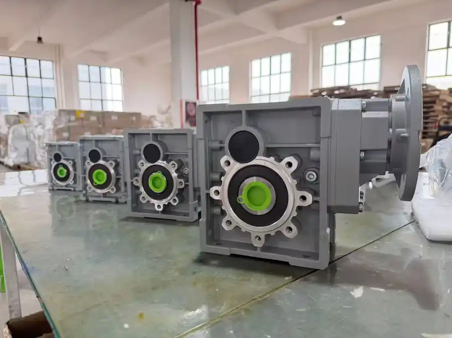

There is no universal gearbox that is best for every machine. However, discussions among mechanical engineers, automation teams and industrial buyers reveal a clear change in how right-angle reducers are evaluated. Efficiency and lifecycle performance now receive more attention alongside ratio, torque and price.
1. Energy efficiency is becoming more important
Factories are upgrading conveyors, packaging lines and automated equipment to reduce energy consumption. A gearbox operates between the motor and driven machine, so its losses affect the electrical energy required to deliver useful output torque.
Hypoid gearing generally has more rolling contact and less sliding contact than worm gearing. This can produce higher mechanical efficiency in many comparable right-angle applications. Lower losses can also mean less heat, which may help oil life and surrounding components.
The actual saving must be calculated from model-specific data. Ratio, reducer size, input speed, lubrication, load and temperature all affect performance. Engineers should compare efficiency at the intended operating point rather than relying on one general percentage.
Use verified efficiency data and the real load profile for an investment calculation.
A small efficiency difference can matter on equipment that operates for thousands of hours every year or across many identical machines. It may matter much less on an intermittent, lightly used mechanism. This is why operating hours belong in every gearbox comparison.
2. Machines are becoming smaller but more powerful
Modern automation often requires a smaller installation envelope without sacrificing output torque. Equipment builders want shorter conveyors, compact cabinets and modular drive units that leave more space for sensors, guarding and production components.
Hypoid reducers can provide useful torque density in a compact right-angle layout. Their offset gear geometry allows the motor and output axis to be arranged efficiently, which can simplify machine packaging. The practical benefit is not merely a smaller gearbox; it is the ability to fit the complete motor-reducer assembly into the available space.
| Design requirement | Why a hypoid reducer may help | What still must be checked |
|---|---|---|
| Limited installation space | Compact right-angle drive layout | Overall motor length, flange and service access |
| Higher torque in a small package | Useful power density for automation | Rated continuous and peak output torque |
| Continuous operation | Lower losses can reduce heat | Thermal rating, ambient temperature and ventilation |
| Precise machine fit | Multiple shaft and flange arrangements | Mounting position, output interface and external loads |
3. Maintenance costs and total cost of ownership matter
A cheaper gearbox is not automatically the lowest-cost choice. Industrial buyers increasingly consider the complete cost over the expected service period:
- purchase and installation cost;
- energy consumption during operation;
- planned maintenance and lubricant requirements;
- downtime and lost production;
- replacement frequency and labor;
- availability of matching replacement units and technical support.
A more efficient reducer can lower electricity use and heat generation, but total cost of ownership depends on the application. A robust worm reducer with a lower initial price may remain the better economic choice for intermittent duty. A hypoid reducer can be more attractive when operating hours, energy price and downtime cost are high.
For a fair comparison, use the same output torque, speed, duty and expected service period. Comparing only motor kW or catalog size can produce a misleading result.
4. Hypoid gear reducer vs worm gear reducer
| Selection factor | Hypoid gear reducer | Worm gear reducer |
|---|---|---|
| Efficiency | Often higher in comparable right-angle duties | Varies widely; sliding contact creates greater losses in many ratios |
| Heat generation | Potentially lower because of reduced losses | Thermal capacity requires particular attention in continuous duty |
| Initial cost | May be higher depending on design | Often economical and widely available |
| Backdriving | Generally backdrivable | Some designs resist backdriving, but never assume safety self-locking |
| Application fit | Efficient compact automation and continuous-duty drives | General right-angle reduction, high ratios and cost-sensitive machinery |
These are general tendencies, not guarantees. Compare the exact models under consideration. If the machine requires load holding, use a correctly rated brake or safety device rather than relying on assumed gearbox self-locking.
5. Where hypoid gear reducers are commonly considered
- conveyor and material-handling systems;
- packaging, filling and labeling machines;
- food-processing and production equipment;
- warehouse and logistics automation;
- compact assembly machines;
- continuous-duty industrial drives where energy losses matter.
6. Hypoid reducer selection checklist
Before requesting a quotation, provide motor power and rated speed, required output rpm, continuous and peak torque, operating hours, starts per hour, load type, mounting position, shaft or flange dimensions, external radial or axial loads, ambient conditions and quantity.
Then compare rated torque, service factor, efficiency, thermal capacity, backlash requirement, permitted shaft load, lubrication, noise, motor interface and dimensional interchangeability.
View SMK BKM hypoid gear reducers, read the detailed NMRV vs hypoid gearbox comparison, or send SMK your application data for model-selection support.
Frequently asked questions
Why can hypoid gear reducers be more efficient?
Hypoid gearing generally has more rolling and less sliding contact than worm gearing. Actual efficiency depends on the exact ratio, size, speed, lubrication and load.
Are hypoid reducers always better than worm reducers?
No. The correct choice depends on performance, duty, ratio, cost, mounting and backdriving requirements. Worm reducers remain suitable for many applications.
How can a hypoid gearbox reduce total cost?
Where higher efficiency and appropriate service life are achieved, it can reduce energy losses, heat, downtime and replacement expense. Calculate the result from real operating data.
What information is needed for selection?
Provide input power and speed, output speed and torque, duty, starts, mounting, shaft loads, environment and quantity.
For current selection requirements, MOQ and standard-order lead time, review the BKM product specifications and buying information.